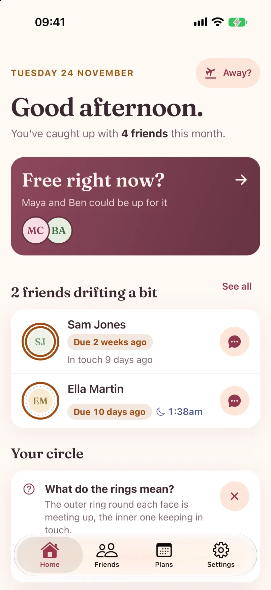
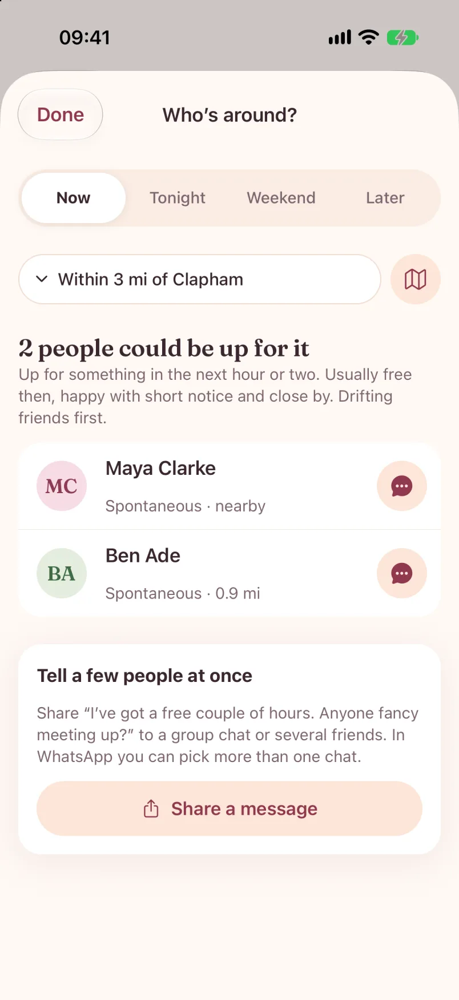
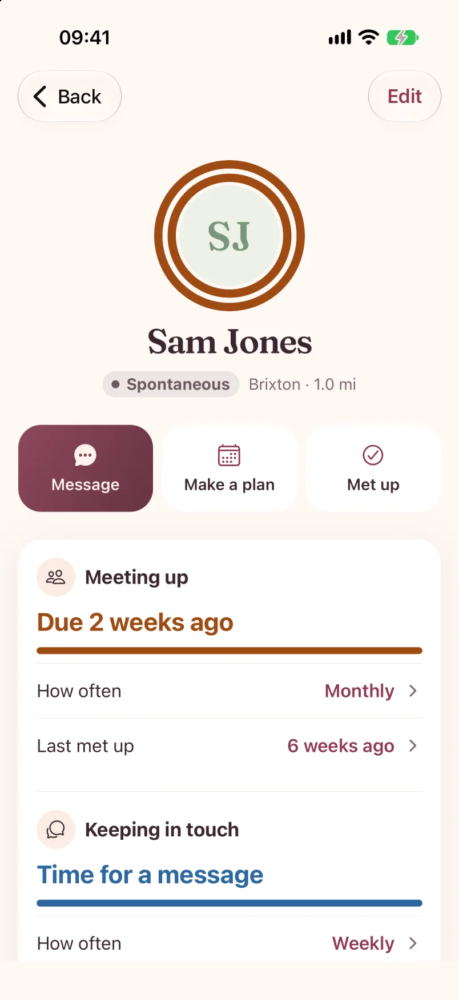
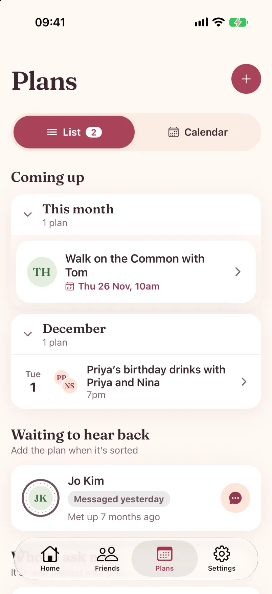

Everything OhHey does.
Small things that add up to seeing your friends more. Here’s the whole lot, starting with the four you’ll use most.

See who’s drifting before it’s been a year.
Every friend has two rings: one for meeting up, one for just being in touch. They count down to the next catch-up, so a glance tells you who’s fine and who’s due. Real numbers, not “a while”.
- Your own pace for each friend: weekly, monthly, twice a year
- A gentle nudge before anyone drifts, never a pile of guilt

Got a free evening? It knows who to ask.
Tell OhHey you’re free now, tonight or at the weekend, and it suggests the friends who are nearby, happy with short notice and due a catch-up. One tap to message them, or share “anyone fancy it?” with a group.
- Each friend’s notice, from spontaneous to book ahead
- Rough areas only, never anyone’s live location

Remember the new job, the house move, the baby’s name.
Jot a note after you meet, and it’s waiting next time, even in the reminder. Every friend has their own page: how often you meet, what you talked about, plans and birthdays, all in one place.
- One note for a whole night out, on everyone who was there
- Every note kept, and only gone when you delete it

Turn “we should catch up” into a date.
Make a plan in a few taps and add it to your calendar. Plans sit by month, from a coffee next week to a wedding weekend in June, and afterwards one tap says how it went.
- All-day and multi-day plans, for weekends away
- Already booked in your calendar? Pick the event and it becomes a plan
And everything else.
Every feature is in the free version, for up to six friends.
Your friends
Each friend, their own way
- Two rhythms. How often to meet up, and how often just to be in touch.
- Pairs. Couples and best mates as one, so you catch up with both.
- People you live with. Never counted as due, and free of the friend limit.
- Groups. College, Work, the football lot, with their WhatsApp group a tap away.
- From your contacts. Or add people by hand, with a photo or their initials.
Notes and memories
What you talked about, kept
- A diary for each friend. Dated notes, plus pinned facts like their kids’ names.
- Group notes. “Reunion weekend in May” goes to the whole College group.
- Every note in one place. Newest first, by week and month, filtered or searched.
- “Last time” in reminders. So you know what to ask about.
- Your year. Who you saw, how often, and who’s drifting.
Staying in touch
The first message, made easy
- Your messengers. WhatsApp, iMessage, Signal, Telegram, texts or a call, in one tap.
- Openers. A short first message ready to go, in your own words if you like.
- One-tap logging. “Met up” or “In touch” from the app, the widget or a reminder, with Undo.
- Friends abroad. Their time now, whether they’re asleep, and the best times to call.
- Message noticing (Android). Counts a friend’s message as being in touch, without reading it.
Reminders
Gentle, never naggy
- A daily nudge. One friend at a time, at a time you choose, only when someone’s due.
- A weekly check-in. “Who did you catch up with?” Ticked off in ten seconds.
- Birthdays. Every one for the year, and a message ready on the day.
- Remind me. About one person, on any day and time you pick.
- Buttons on reminders. Message, Met up or Snooze, straight from the notification.
When life gets busy
OhHey eases off when you need it to
- Going through something. Check in on a friend more often while they’re having a hard time.
- Take a break. Pause reminders, and come back to a calm “welcome back”.
- Going away. See who lives near where you’re heading, and plan to see them.
- No streaks. Nothing to keep up, and no guilt for a busy month.
Private, and yours
It all stays on your phone
- No account. Open the app and start. No sign-up, no email.
- No OhHey server. Your friends, notes and plans are never sent to us.
- No ads, no tracking. Only an optional crash report, and a receipt if you buy Premium.
- Backups to your own cloud. Your iCloud or Google Drive, plus a weekly copy on your phone.
- Widgets, dark mode, big text. On iPhone and Android, readable at any text size.
Every feature is free for up to six friends (plus people you live with). Premium makes room for as many as you like.